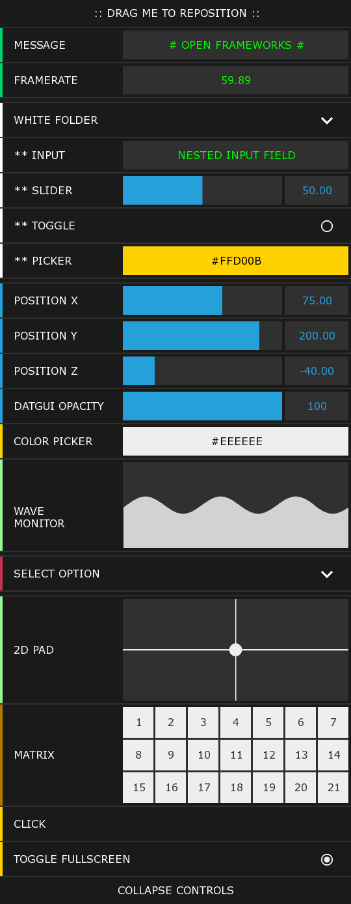
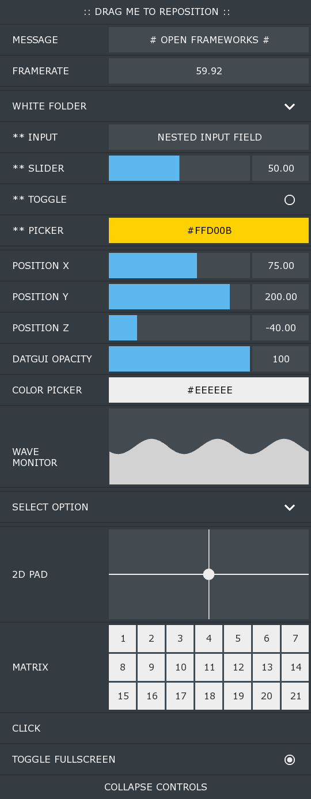
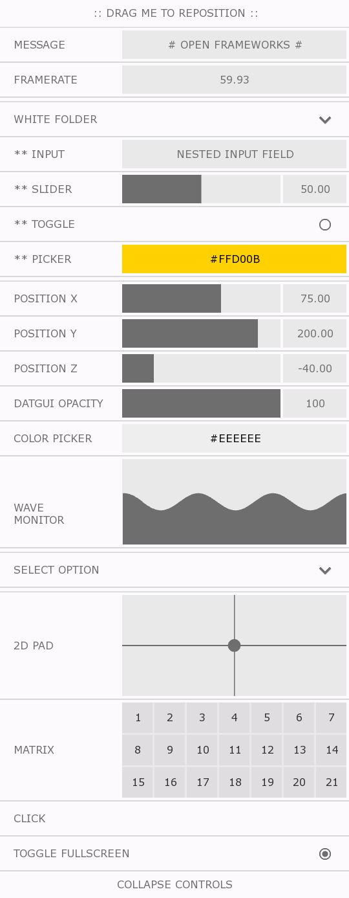
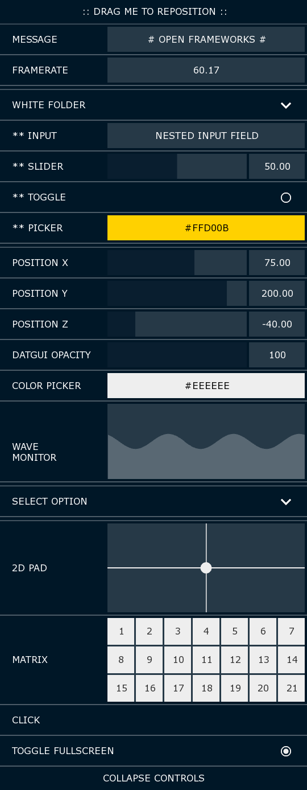
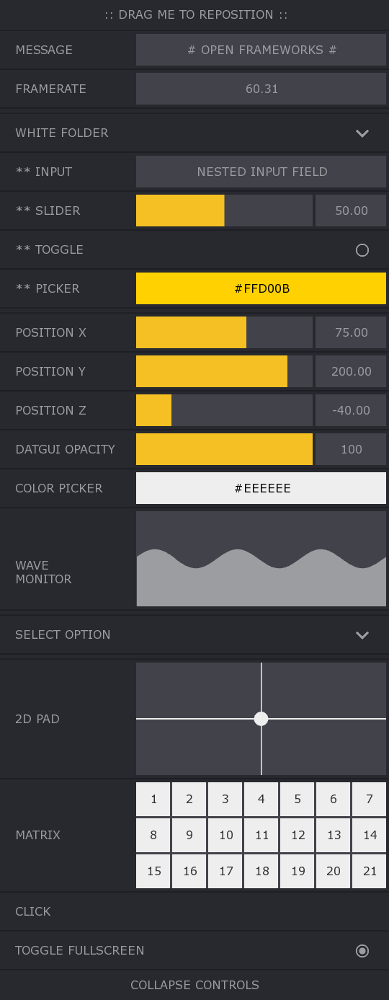
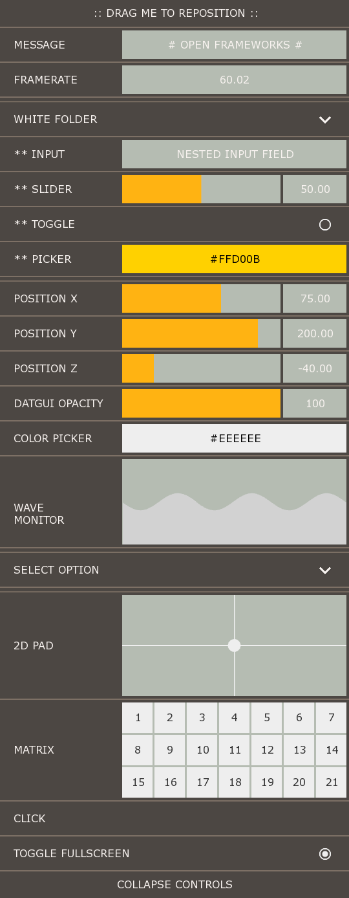
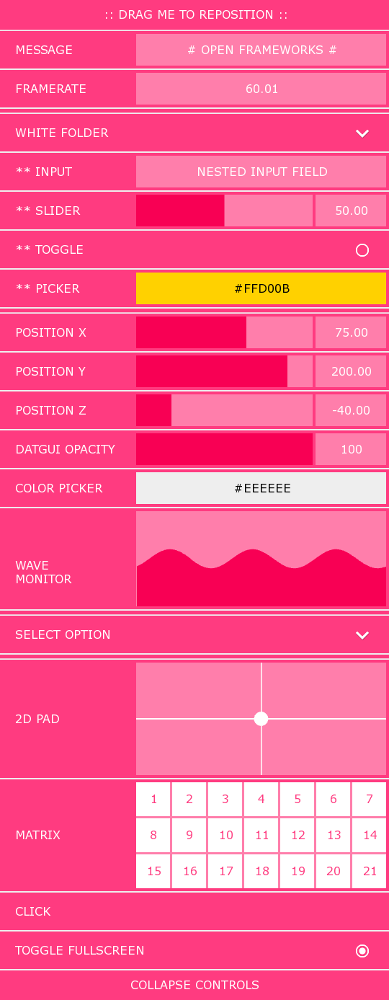

Themes
ofxDatGui is easily customizeable via themes that you can apply to individual components or your entire Gui.
Themes allow you to customize both the color palette and layout characteristics of components and are easily created by simply extending the ofxDatGuiTheme class which exposes the properties that can be changed.
Themes can be applied to any component or ofxDatGui instance by calling setTheme and passing in a reference to your theme.
ofxDatGui* myGui = new ofxDatGui( ofxDatGuiAnchor::TOP_RIGHT ); myGui->setTheme(new ofxDatGuiThemeSmoke());
ofxDatGui currently ships with the following built-in themes with more on the way.
DEFAULT

SMOKE

WIREFRAME

MIGNIGHT

AQUA

CHARCOAL

AUTUMN

CANDY
